Vẽ tùy chỉnh trong 2D
Giới thiệu
Godot có các node để vẽ sprite, polygon, particle, văn bản và nhiều nhu cầu phổ biến khác trong phát triển game. Tuy nhiên, nếu bạn cần thứ gì đó đặc thù mà các node tiêu chuẩn không đáp ứng, bạn có thể cho bất kỳ node 2D nào (ví dụ, dựa trên Control hoặc Node2D) vẽ lên màn hình bằng các lệnh tùy chỉnh.
Vẽ tùy chỉnh trong node 2D thực sự hữu ích. Dưới đây là một số trường hợp sử dụng:
Vẽ các hình dạng hoặc logic mà node có sẵn không làm được, như hình ảnh có vệt đuôi hoặc polygon có hoạt ảnh đặc biệt.
Vẽ số lượng lớn đối tượng đơn giản, như lưới hoặc bàn cờ cho game 2D. Vẽ tùy chỉnh tránh được chi phí khi dùng số lượng lớn node, có thể giảm sử dụng bộ nhớ và cải thiện hiệu năng.
Tạo control UI tùy chỉnh. Có rất nhiều control có sẵn, nhưng khi có nhu cầu đặc biệt, có lẽ bạn sẽ cần một control tùy chỉnh.
Vẽ
Thêm script vào bất kỳ node nào dẫn xuất từ CanvasItem, như Control hoặc Node2D. Sau đó ghi đè hàm _draw().
extends Node2D
func _draw():
pass # Your draw commands here.
using Godot;
public partial class MyNode2D : Node2D
{
public override void _Draw()
{
// Your draw commands here.
}
}
Các lệnh vẽ được mô tả trong tài liệu tham khảo lớp CanvasItem. Có rất nhiều lệnh và chúng ta sẽ xem một số trong các ví dụ bên dưới.
Cập nhật
Hàm _draw chỉ được gọi một lần, sau đó các lệnh vẽ được lưu cache và ghi nhớ, nên không cần gọi thêm.
Nếu cần vẽ lại vì một biến hoặc thứ gì khác đã thay đổi, hãy gọi CanvasItem.queue_redraw trong chính node đó và một lần gọi _draw() mới sẽ diễn ra.
Đây là một ví dụ phức tạp hơn một chút, trong đó ta có một biến texture có thể thay đổi bất cứ lúc nào, và dùng setter để buộc vẽ lại texture khi nó bị thay đổi:
extends Node2D
@export var texture : Texture2D:
set(value):
texture = value
queue_redraw()
func _draw():
draw_texture(texture, Vector2())
using Godot;
public partial class MyNode2D : Node2D
{
private Texture2D _texture;
[Export]
public Texture2D Texture
{
get
{
return _texture;
}
set
{
_texture = value;
QueueRedraw();
}
}
public override void _Draw()
{
DrawTexture(_texture, new Vector2());
}
}
Để xem nó hoạt động, bạn có thể đặt texture là biểu tượng Godot trong trình chỉnh sửa bằng cách kéo thả icon.svg mặc định từ thẻ FileSystem vào thuộc tính Texture trên thẻ Inspector. Khi thay đổi giá trị thuộc tính Texture trong lúc script trên đang chạy, texture cũng sẽ tự động thay đổi.
Trong một số trường hợp, có thể ta cần vẽ lại mỗi frame. Để làm vậy, hãy gọi queue_redraw từ phương thức _process, như sau:
extends Node2D
func _draw():
pass # Your draw commands here.
func _process(_delta):
queue_redraw()
using Godot;
public partial class MyNode2D : Node2D
{
public override void _Draw()
{
// Your draw commands here.
}
public override void _Process(double delta)
{
QueueRedraw();
}
}
Tọa độ và căn chỉnh độ rộng nét vẽ
API vẽ dùng hệ tọa độ của CanvasItem, không nhất thiết là tọa độ pixel. Điều này có nghĩa _draw() dùng không gian tọa độ được tạo sau khi áp dụng transform của CanvasItem. Ngoài ra, bạn có thể áp dụng thêm một transform tùy chỉnh lên trên bằng draw_set_transform hoặc draw_set_transform_matrix.
Khi dùng draw_line, bạn nên cân nhắc độ rộng của nét vẽ. Khi dùng độ rộng là số lẻ, vị trí điểm đầu và điểm cuối nên được dịch đi 0.5 để giữ nét vẽ ở chính giữa, như minh họa bên dưới.
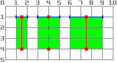
func _draw():
draw_line(Vector2(1.5, 1.0), Vector2(1.5, 4.0), Color.GREEN, 1.0)
draw_line(Vector2(4.0, 1.0), Vector2(4.0, 4.0), Color.GREEN, 2.0)
draw_line(Vector2(7.5, 1.0), Vector2(7.5, 4.0), Color.GREEN, 3.0)
public override void _Draw()
{
DrawLine(new Vector2(1.5f, 1.0f), new Vector2(1.5f, 4.0f), Colors.Green, 1.0f);
DrawLine(new Vector2(4.0f, 1.0f), new Vector2(4.0f, 4.0f), Colors.Green, 2.0f);
DrawLine(new Vector2(7.5f, 1.0f), new Vector2(7.5f, 4.0f), Colors.Green, 3.0f);
}
Điều tương tự áp dụng cho phương thức draw_rect với filled = false.
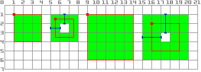
func _draw():
draw_rect(Rect2(1.0, 1.0, 3.0, 3.0), Color.GREEN)
draw_rect(Rect2(5.5, 1.5, 2.0, 2.0), Color.GREEN, false, 1.0)
draw_rect(Rect2(9.0, 1.0, 5.0, 5.0), Color.GREEN)
draw_rect(Rect2(16.0, 2.0, 3.0, 3.0), Color.GREEN, false, 2.0)
public override void _Draw()
{
DrawRect(new Rect2(1.0f, 1.0f, 3.0f, 3.0f), Colors.Green);
DrawRect(new Rect2(5.5f, 1.5f, 2.0f, 2.0f), Colors.Green, false, 1.0f);
DrawRect(new Rect2(9.0f, 1.0f, 5.0f, 5.0f), Colors.Green);
DrawRect(new Rect2(16.0f, 2.0f, 3.0f, 3.0f), Colors.Green, false, 2.0f);
}
Vẽ có khử răng cưa
Godot cung cấp tham số trong draw_line để bật khử răng cưa, nhưng không phải phương thức vẽ tùy chỉnh nào cũng có tham số antialiased này.
Với các phương thức vẽ tùy chỉnh không có tham số antialiased, bạn có thể bật MSAA 2D, vốn ảnh hưởng đến việc kết xuất trong toàn bộ viewport. Cách này cho khử răng cưa chất lượng cao, nhưng tốn hiệu năng hơn và chỉ trên một số phần tử nhất định. Xem Khử răng cưa 2D để biết thêm thông tin.
Đây là so sánh một nét vẽ có độ rộng tối thiểu (width=-1) được vẽ với antialiased=false, antialiased=true, và antialiased=false khi bật MSAA 2D 2x, 4x và 8x.
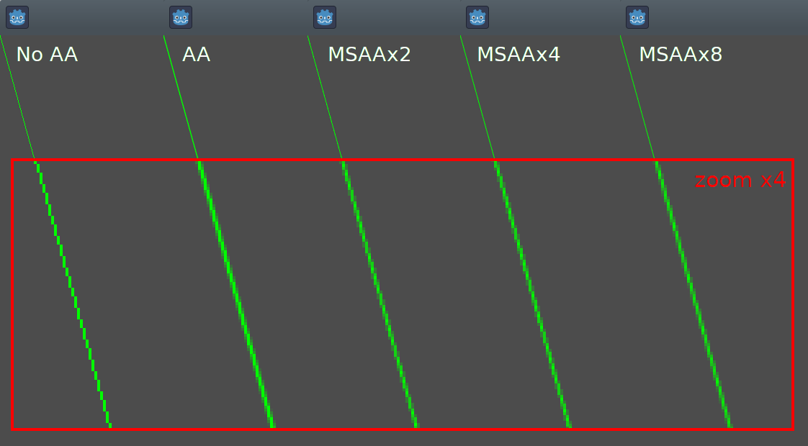
Công cụ
Bạn cũng có thể muốn node tự vẽ của mình hiển thị khi chạy trong trình chỉnh sửa. Điều này có thể dùng để xem trước hoặc trực quan hóa một tính năng hay hành vi nào đó.
Để làm vậy, bạn có thể dùng annotation tool trên cả GDScript và C#. Xem ví dụ bên dưới và Chạy code trong trình chỉnh sửa để biết thêm thông tin.
Ví dụ 1: vẽ hình dạng tùy chỉnh
Giờ chúng ta sẽ dùng chức năng vẽ tùy chỉnh của Godot Engine để vẽ thứ mà Godot không cung cấp hàm sẵn. Chúng ta sẽ tái tạo logo Godot nhưng bằng code — chỉ dùng các hàm vẽ.
Bạn sẽ phải viết một hàm để thực hiện việc này và tự vẽ nó.
Ghi chú
Các hướng dẫn sau dùng một tập tọa độ cố định có thể quá nhỏ đối với màn hình độ phân giải cao (lớn hơn 1080p). Nếu đó là trường hợp của bạn và hình vẽ quá nhỏ, hãy cân nhắc tăng window scale trong cài đặt dự án Display > Window > Stretch > Scale để điều chỉnh dự án cho độ phân giải cao hơn (scale 2 hoặc 4 thường cho kết quả tốt).
Vẽ hình đa giác tùy chỉnh
Dù đã có một node chuyên dụng để vẽ polygon tùy chỉnh ( Polygon2D), trong trường hợp này chúng ta sẽ chỉ dùng các hàm vẽ cấp thấp hơn để kết hợp chúng trên cùng một node và có thể tạo các hình dạng phức tạp hơn sau này.
Đầu tiên, chúng ta sẽ định nghĩa một tập hợp các điểm - tức các tọa độ X và Y - tạo nên phần nền của hình:
extends Node2D
var coords_head : Array = [
[ 22.952, 83.271 ], [ 28.385, 98.623 ],
[ 53.168, 107.647 ], [ 72.998, 107.647 ],
[ 99.546, 98.623 ], [ 105.048, 83.271 ],
[ 105.029, 55.237 ], [ 110.740, 47.082 ],
[ 102.364, 36.104 ], [ 94.050, 40.940 ],
[ 85.189, 34.445 ], [ 85.963, 24.194 ],
[ 73.507, 19.930 ], [ 68.883, 28.936 ],
[ 59.118, 28.936 ], [ 54.494, 19.930 ],
[ 42.039, 24.194 ], [ 42.814, 34.445 ],
[ 33.951, 40.940 ], [ 25.637, 36.104 ],
[ 17.262, 47.082 ], [ 22.973, 55.237 ]
]
using Godot;
public partial class MyNode2D : Node2D
{
private float[,] _coordsHead =
{
{ 22.952f, 83.271f }, { 28.385f, 98.623f },
{ 53.168f, 107.647f }, { 72.998f, 107.647f },
{ 99.546f, 98.623f }, { 105.048f, 83.271f },
{ 105.029f, 55.237f }, { 110.740f, 47.082f },
{ 102.364f, 36.104f }, { 94.050f, 40.940f },
{ 85.189f, 34.445f }, { 85.963f, 24.194f },
{ 73.507f, 19.930f }, { 68.883f, 28.936f },
{ 59.118f, 28.936f }, { 54.494f, 19.930f },
{ 42.039f, 24.194f }, { 42.814f, 34.445f },
{ 33.951f, 40.940f }, { 25.637f, 36.104f },
{ 17.262f, 47.082f }, { 22.973f, 55.237f }
};
}
Định dạng này tuy gọn nhưng không phải là định dạng mà Godot hiểu được để vẽ đa giác. Trong một tình huống khác, chúng ta có thể phải nạp các tọa độ này từ file hoặc tính toán vị trí trong khi ứng dụng đang chạy, vì vậy có thể cần một bước chuyển đổi.
Để chuyển các tọa độ này sang đúng định dạng, chúng ta sẽ tạo một phương thức mới float_array_to_Vector2Array(). Sau đó, chúng ta sẽ override hàm _ready() - hàm mà Godot chỉ gọi một lần duy nhất khi bắt đầu thực thi - để nạp các tọa độ đó vào một biến:
var head : PackedVector2Array
func float_array_to_Vector2Array(coords : Array) -> PackedVector2Array:
# Convert the array of floats into a PackedVector2Array.
var array : PackedVector2Array = []
for coord in coords:
array.append(Vector2(coord[0], coord[1]))
return array
func _ready():
head = float_array_to_Vector2Array(coords_head);
private Vector2[] _head;
private Vector2[] FloatArrayToVector2Array(float[,] coords)
{
// Convert the array of floats into an array of Vector2.
int size = coords.GetUpperBound(0);
Vector2[] array = new Vector2[size + 1];
for (int i = 0; i <= size; i++)
{
array[i] = new Vector2(coords[i, 0], coords[i, 1]);
}
return array;
}
public override void _Ready()
{
_head = FloatArrayToVector2Array(_coordsHead);
}
Cuối cùng, để vẽ hình đầu tiên, chúng ta sẽ dùng phương thức draw_polygon và truyền vào các điểm (dưới dạng mảng tọa độ Vector2) cùng màu của nó, như sau:
func _draw():
# We are going to paint with this color.
var godot_blue : Color = Color("478cbf")
# We pass the PackedVector2Array to draw the shape.
draw_polygon(head, [ godot_blue ])
public override void _Draw()
{
// We are going to paint with this color.
Color godotBlue = new Color("478cbf");
// We pass the array of Vector2 to draw the shape.
DrawPolygon(_head, [godotBlue]);
}
Khi chạy, bạn sẽ thấy kết quả tương tự như sau:
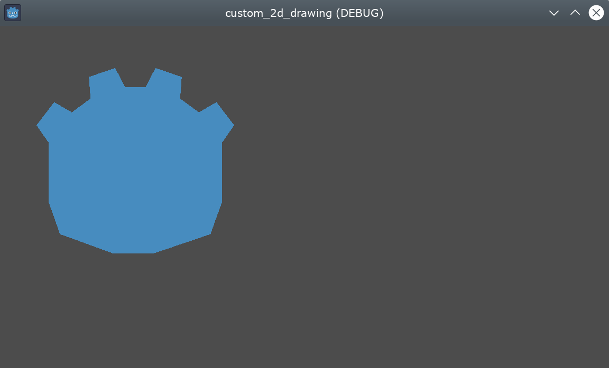
Lưu ý rằng phần dưới của logo trông bị gãy khúc - đó là vì chỉ có ít điểm được dùng để định nghĩa phần này. Để mô phỏng một đường cong mượt, chúng ta có thể thêm nhiều điểm hơn vào mảng, hoặc dùng một hàm toán học để nội suy đường cong và tạo hình mượt bằng code (xem ví dụ 2).
Đa giác sẽ luôn nối điểm được định nghĩa cuối cùng với điểm đầu tiên để tạo thành một hình khép kín.
Vẽ các đường nối liền
Vẽ một chuỗi các đoạn thẳng nối liền nhau mà không khép kín thành đa giác cũng rất giống với phương thức trước. Chúng ta sẽ dùng một tập các đoạn thẳng nối liền để vẽ miệng của logo Godot.
Đầu tiên, chúng ta sẽ định nghĩa danh sách các tọa độ tạo nên hình miệng, như sau:
var coords_mouth = [
[ 22.817, 81.100 ], [ 38.522, 82.740 ],
[ 39.001, 90.887 ], [ 54.465, 92.204 ],
[ 55.641, 84.260 ], [ 72.418, 84.177 ],
[ 73.629, 92.158 ], [ 88.895, 90.923 ],
[ 89.556, 82.673 ], [ 105.005, 81.100 ]
]
private float[,] _coordsMouth =
{
{ 22.817f, 81.100f }, { 38.522f, 82.740f },
{ 39.001f, 90.887f }, { 54.465f, 92.204f },
{ 55.641f, 84.260f }, { 72.418f, 84.177f },
{ 73.629f, 92.158f }, { 88.895f, 90.923f },
{ 89.556f, 82.673f }, { 105.005f, 81.100f }
};
Chúng ta sẽ nạp các tọa độ này vào một biến và định nghĩa thêm một biến chứa độ dày nét vẽ có thể tùy chỉnh:
var mouth : PackedVector2Array
var _mouth_width : float = 4.4
func _ready():
head = float_array_to_Vector2Array(coords_head);
mouth = float_array_to_Vector2Array(coords_mouth);
private Vector2[] _mouth;
private float _mouthWidth = 4.4f;
public override void _Ready()
{
_head = FloatArrayToVector2Array(_coordsHead);
_mouth = FloatArrayToVector2Array(_coordsMouth);
}
Và cuối cùng, chúng ta sẽ dùng phương thức draw_polyline để thực sự vẽ đường, như sau:
func _draw():
# We will use white to draw the line.
var white : Color = Color.WHITE
var godot_blue : Color = Color("478cbf")
draw_polygon(head, [ godot_blue ])
# We draw the while line on top of the previous shape.
draw_polyline(mouth, white, _mouth_width)
public override void _Draw()
{
// We will use white to draw the line.
Color white = Colors.White;
Color godotBlue = new Color("478cbf");
DrawPolygon(_head, [godotBlue]);
// We draw the while line on top of the previous shape.
DrawPolyline(_mouth, white, _mouthWidth);
}
Bạn sẽ nhận được kết quả sau:
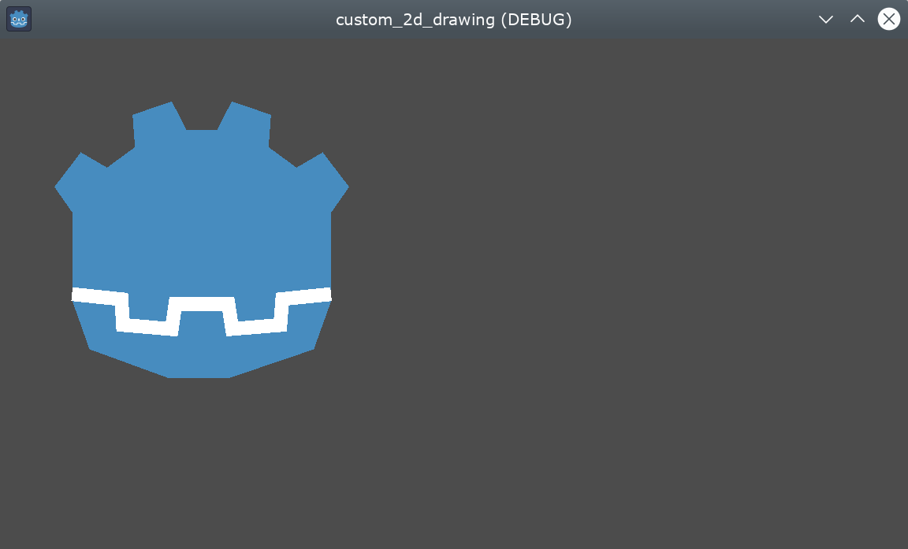
Khác với draw_polygon(), polyline chỉ có thể có một màu duy nhất cho tất cả các điểm (tham số thứ hai). Phương thức này có thêm 2 tham số: độ rộng của đường (mặc định là nhỏ nhất có thể) và bật hoặc tắt khử răng cưa (antialiasing, mặc định bị tắt).
Thứ tự các lệnh gọi trong _draw rất quan trọng - giống như vị trí của các Node trong cây phân cấp, các hình khác nhau sẽ được vẽ từ trên xuống dưới, khiến hình vẽ sau che hình vẽ trước nếu chúng chồng lên nhau. Trong trường hợp này, chúng ta muốn vẽ miệng đè lên đầu, nên đặt nó ở phía sau.
Hãy chú ý cách chúng ta có thể định nghĩa màu theo nhiều cách khác nhau, bằng mã thập lục phân hoặc bằng tên màu định sẵn. Xem lớp Color để biết các hằng số khác và các cách định nghĩa màu khác.
Vẽ hình tròn
Để tạo đôi mắt, chúng ta sẽ thêm 4 lệnh gọi nữa để vẽ các hình mắt với kích thước, màu sắc và vị trí khác nhau.
Để vẽ hình tròn, bạn định vị nó dựa trên tâm bằng phương thức draw_circle. Tham số đầu tiên là một Vector2 chứa tọa độ tâm, tham số thứ hai là bán kính và tham số thứ ba là màu:
func _draw():
var white : Color = Color.WHITE
var godot_blue : Color = Color("478cbf")
var grey : Color = Color("414042")
draw_polygon(head, [ godot_blue ])
draw_polyline(mouth, white, _mouth_width)
# Four circles for the 2 eyes: 2 white, 2 grey.
draw_circle(Vector2(42.479, 65.4825), 9.3905, white)
draw_circle(Vector2(85.524, 65.4825), 9.3905, white)
draw_circle(Vector2(43.423, 65.92), 6.246, grey)
draw_circle(Vector2(84.626, 66.008), 6.246, grey)
public override void _Draw()
{
Color white = Colors.White;
Color godotBlue = new Color("478cbf");
Color grey = new Color("414042");
DrawPolygon(_head, [godotBlue]);
DrawPolyline(_mouth, white, _mouthWidth);
// Four circles for the 2 eyes: 2 white, 2 grey.
DrawCircle(new Vector2(42.479f, 65.4825f), 9.3905f, white);
DrawCircle(new Vector2(85.524f, 65.4825f), 9.3905f, white);
DrawCircle(new Vector2(43.423f, 65.92f), 6.246f, grey);
DrawCircle(new Vector2(84.626f, 66.008f), 6.246f, grey);
}
Khi chạy, bạn sẽ có kết quả tương tự như sau:
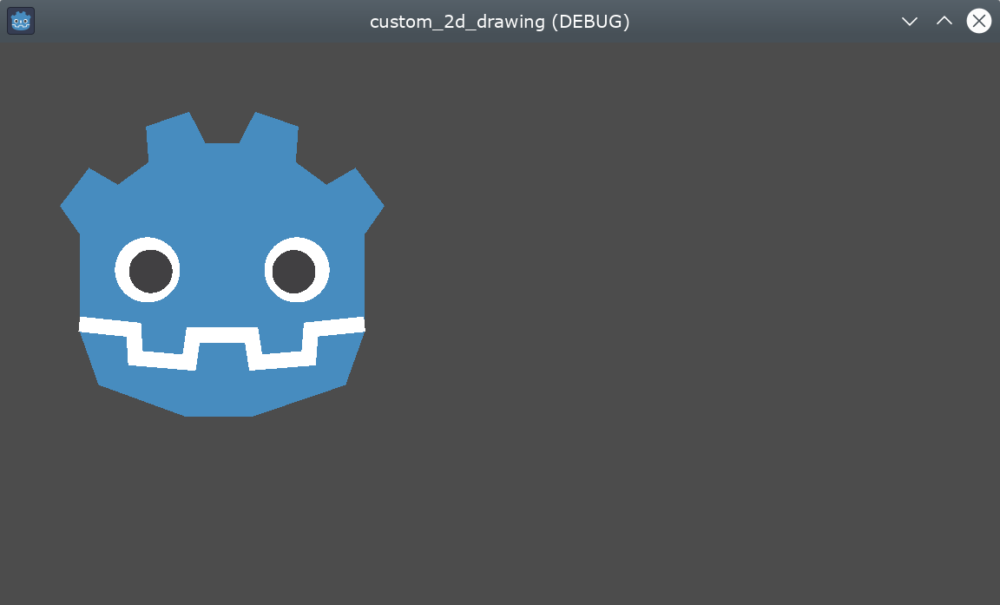
Với các cung tròn không tô kín (một phần của hình tròn nằm giữa hai góc bất kỳ), bạn có thể dùng phương thức draw_arc.
Vẽ đường thẳng
Để vẽ hình cuối cùng (cái mũi), chúng ta sẽ dùng một đoạn thẳng để vẽ gần đúng.
draw_line có thể được dùng để vẽ một đoạn thẳng duy nhất bằng cách truyền tọa độ điểm đầu và điểm cuối làm tham số, như sau:
func _draw():
var white : Color = Color.WHITE
var godot_blue : Color = Color("478cbf")
var grey : Color = Color("414042")
draw_polygon(head, [ godot_blue ])
draw_polyline(mouth, white, _mouth_width)
draw_circle(Vector2(42.479, 65.4825), 9.3905, white)
draw_circle(Vector2(85.524, 65.4825), 9.3905, white)
draw_circle(Vector2(43.423, 65.92), 6.246, grey)
draw_circle(Vector2(84.626, 66.008), 6.246, grey)
# Draw a short but thick white vertical line for the nose.
draw_line(Vector2(64.273, 60.564), Vector2(64.273, 74.349), white, 5.8)
public override void _Draw()
{
Color white = Colors.White;
Color godotBlue = new Color("478cbf");
Color grey = new Color("414042");
DrawPolygon(_head, [godotBlue]);
DrawPolyline(_mouth, white, _mouthWidth);
DrawCircle(new Vector2(42.479f, 65.4825f), 9.3905f, white);
DrawCircle(new Vector2(85.524f, 65.4825f), 9.3905f, white);
DrawCircle(new Vector2(43.423f, 65.92f), 6.246f, grey);
DrawCircle(new Vector2(84.626f, 66.008f), 6.246f, grey);
// Draw a short but thick white vertical line for the nose.
DrawLine(new Vector2(64.273f, 60.564f), new Vector2(64.273f, 74.349f),
white, 5.8f);
}
Giờ bạn sẽ thấy hình sau trên màn hình:
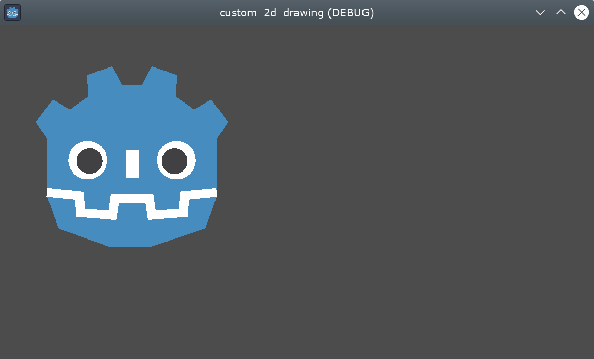
Lưu ý rằng nếu cần vẽ nhiều đoạn thẳng không nối liền cùng lúc, bạn có thể đạt hiệu năng tốt hơn bằng cách vẽ tất cả chúng trong một lệnh gọi duy nhất, dùng phương thức draw_multiline.
Vẽ chữ
Mặc dù dùng Node Label là cách phổ biến nhất để thêm chữ vào ứng dụng, hàm cấp thấp _draw cũng có chức năng thêm chữ vào phần vẽ tùy chỉnh của Node. Chúng ta sẽ dùng nó để thêm chữ "GODOT" bên dưới đầu robot.
Chúng ta sẽ dùng phương thức draw_string để làm việc này, như sau:
var default_font : Font = ThemeDB.fallback_font;
func _draw():
var white : Color = Color.WHITE
var godot_blue : Color = Color("478cbf")
var grey : Color = Color("414042")
draw_polygon(head, [ godot_blue ])
draw_polyline(mouth, white, _mouth_width)
draw_circle(Vector2(42.479, 65.4825), 9.3905, white)
draw_circle(Vector2(85.524, 65.4825), 9.3905, white)
draw_circle(Vector2(43.423, 65.92), 6.246, grey)
draw_circle(Vector2(84.626, 66.008), 6.246, grey)
draw_line(Vector2(64.273, 60.564), Vector2(64.273, 74.349), white, 5.8)
# Draw GODOT text below the logo with the default font, size 22.
draw_string(default_font, Vector2(20, 130), "GODOT",
HORIZONTAL_ALIGNMENT_CENTER, 90, 22)
private Font _defaultFont = ThemeDB.FallbackFont;
public override void _Draw()
{
Color white = Colors.White;
Color godotBlue = new Color("478cbf");
Color grey = new Color("414042");
DrawPolygon(_head, [godotBlue]);
DrawPolyline(_mouth, white, _mouthWidth);
DrawCircle(new Vector2(42.479f, 65.4825f), 9.3905f, white);
DrawCircle(new Vector2(85.524f, 65.4825f), 9.3905f, white);
DrawCircle(new Vector2(43.423f, 65.92f), 6.246f, grey);
DrawCircle(new Vector2(84.626f, 66.008f), 6.246f, grey);
DrawLine(new Vector2(64.273f, 60.564f), new Vector2(64.273f, 74.349f),
white, 5.8f);
// Draw GODOT text below the logo with the default font, size 22.
DrawString(_defaultFont, new Vector2(20f, 130f), "GODOT",
HorizontalAlignment.Center, 90, 22);
}
Ở đây, trước tiên chúng ta nạp font mặc định của theme đã cấu hình vào biến defaultFont (có thể đặt một font tùy chỉnh thay thế), rồi truyền vào các tham số sau: font, vị trí, nội dung chữ, căn lề ngang, độ rộng và cỡ chữ.
Bạn sẽ thấy kết quả sau trên màn hình:
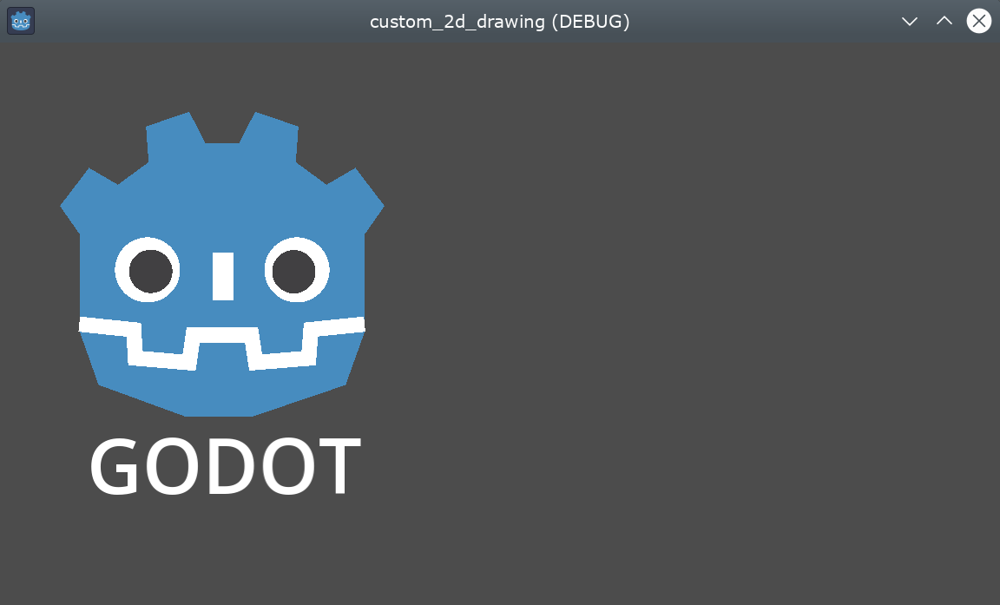
Các tham số bổ sung cũng như các phương thức khác liên quan đến chữ và ký tự có thể được tìm thấy trong tài liệu tham khảo lớp CanvasItem.
Hiển thị hình vẽ khi đang chỉnh sửa
Mặc dù code cho đến giờ có thể vẽ logo trên cửa sổ đang chạy, nó sẽ không hiển thị trong 2D view của trình chỉnh sửa. Trong một số trường hợp, bạn cũng muốn hiển thị Node2D hoặc control tùy chỉnh của mình trong trình chỉnh sửa để định vị và co giãn nó cho phù hợp, giống như hầu hết các node khác.
Để hiển thị logo trực tiếp trong trình chỉnh sửa (mà không cần chạy), bạn có thể dùng annotation @tool để yêu cầu phần vẽ tùy chỉnh của node cũng xuất hiện khi đang chỉnh sửa, như sau:
@tool
extends Node2D
using Godot;
[Tool]
public partial class MyNode2D : Node2D
Lần đầu tiên bạn thêm hoặc xóa annotation @tool, bạn sẽ cần lưu scene, build lại dự án (chỉ với C#) và nạp lại scene hiện tại thủ công qua tùy chọn menu Scene > Reload Saved Scene để làm mới node hiện tại trong view 2D.
Hoạt ảnh
Nếu muốn hình tùy chỉnh thay đổi lúc chạy, chúng ta có thể sửa các phương thức được gọi hoặc tham số của chúng trong lúc thực thi, hoặc áp dụng một transform.
Ví dụ, nếu muốn hình tùy chỉnh vừa thiết kế xoay tròn, chúng ta có thể thêm biến và code sau vào các phương thức _ready và _process:
extends Node2D
@export var rotation_speed : float = 1 # In radians per second.
func _ready():
rotation = 0
...
func _process(delta: float):
rotation -= rotation_speed * delta
[Export]
public float RotationSpeed { get; set; } = 1.0f; // In radians per second.
public override void _Ready()
{
Rotation = 0;
...
}
public override void _Process(double delta)
{
Rotation -= RotationSpeed * (float)delta;
}
Vấn đề của đoạn code trên là vì chúng ta đã tạo các điểm xấp xỉ trên một hình chữ nhật bắt đầu từ góc trên bên trái, tức tọa độ (0, 0), và kéo dài sang phải và xuống dưới, nên phép xoay sẽ dùng góc trên bên trái làm tâm xoay. Thay đổi transform vị trí của node cũng không giúp được gì ở đây, vì transform xoay được áp dụng trước.
Dù chúng ta có thể viết lại tọa độ của tất cả các điểm để chúng nằm quanh tâm (0, 0), kể cả tọa độ âm, việc đó sẽ tốn rất nhiều công sức.
Một cách khắc phục là dùng phương thức cấp thấp hơn draw_set_transform để giải quyết vấn đề này: tịnh tiến tất cả các điểm trong không gian riêng của CanvasItem, rồi đưa nó về vị trí ban đầu bằng một transform node thông thường, trong trình chỉnh sửa hoặc bằng code, như sau:
func _ready():
rotation = 0
position = Vector2(60, 60)
...
func _draw():
draw_set_transform(Vector2(-60, -60))
...
public override void _Ready()
{
Rotation = 0;
Position = new Vector2(60, 60);
...
}
public override void _Draw()
{
DrawSetTransform(new Vector2(-60.0f, -60.0f));
...
}
Đây là kết quả, giờ xoay quanh tâm xoay tại (60, 60):
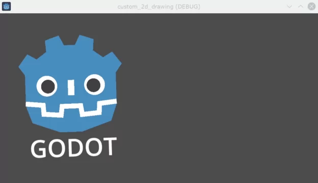
Nếu thứ chúng ta muốn tạo hoạt ảnh là một thuộc tính bên trong lệnh gọi _draw(), cần nhớ gọi queue_redraw() để buộc làm mới, nếu không nó sẽ không được cập nhật trên màn hình.
Ví dụ, đây là cách làm cho robot trông như đang mở và khép miệng, bằng cách thay đổi độ rộng của đường miệng theo một đường cong hình sin (sin):
var _mouth_width : float = 4.4
var _max_width : float = 7
var _time : float = 0
func _process(delta : float):
_time += delta
_mouth_width = abs(sin(_time) * _max_width)
queue_redraw()
func _draw():
...
draw_polyline(mouth, white, _mouth_width)
...
private float _mouthWidth = 4.4f;
private float _maxWidth = 7f;
private float _time = 0f;
public override void _Process(double delta)
{
_time += (float)delta;
_mouthWidth = Mathf.Abs(Mathf.Sin(_time) * _maxWidth);
QueueRedraw();
}
public override void _Draw()
{
...
DrawPolyline(_mouth, white, _mouthWidth);
...
}
Khi chạy, nó sẽ trông gần giống như sau:
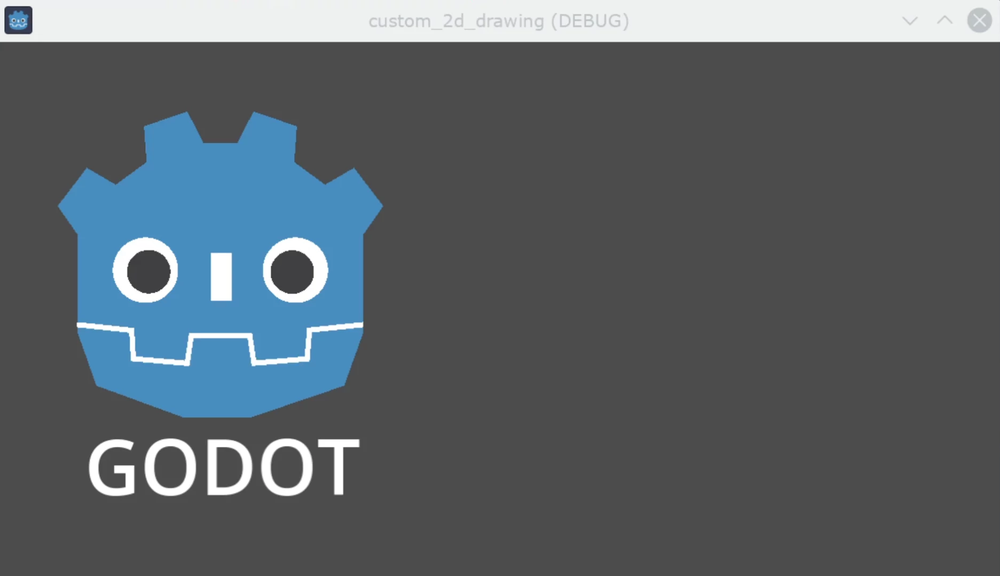
Lưu ý rằng _mouth_width là một thuộc tính do người dùng định nghĩa như mọi thuộc tính khác, và nó hoặc bất kỳ thuộc tính nào khác được dùng làm tham số vẽ đều có thể được tạo hoạt ảnh bằng các phương pháp chuẩn và cấp cao hơn như Tween hoặc Node AnimationPlayer. Điểm khác biệt duy nhất là cần gọi queue_redraw() để áp dụng các thay đổi đó và hiển thị chúng trên màn hình.
Ví dụ 2: vẽ một đường động
Ví dụ trước hữu ích để học cách vẽ và chỉnh sửa node với hình dạng và hoạt ảnh tùy chỉnh. Cách này có một số ưu điểm, chẳng hạn dùng tọa độ và vector chính xác để vẽ thay vì bitmap - nghĩa là hình sẽ co giãn tốt khi được biến đổi trên màn hình. Trong một số trường hợp, có thể đạt kết quả tương tự bằng cách kết hợp các chức năng cấp cao hơn với các node như sprite hoặc AnimatedSprite nạp resource SVG (cũng là hình ảnh được định nghĩa bằng vector) và node AnimationPlayer.
Trong những trường hợp khác, điều đó sẽ không khả thi vì chúng ta không biết trước kết quả hiển thị đồ họa sẽ ra sao trước khi chạy code. Ở đây chúng ta sẽ xem cách vẽ một đường động có tọa độ không biết trước và chịu ảnh hưởng bởi đầu vào của người dùng.
Vẽ đường thẳng giữa 2 điểm
Giả sử chúng ta muốn vẽ một đường thẳng giữa 2 điểm, điểm thứ nhất cố định ở góc trên bên trái (0, 0) và điểm thứ hai được xác định bởi vị trí con trỏ trên màn hình.
Chúng ta có thể vẽ một đường động giữa 2 điểm đó như sau:
extends Node2D
var point1 : Vector2 = Vector2(0, 0)
var width : int = 10
var color : Color = Color.GREEN
var _point2 : Vector2
func _process(_delta):
var mouse_position = get_viewport().get_mouse_position()
if mouse_position != _point2:
_point2 = mouse_position
queue_redraw()
func _draw():
draw_line(point1, _point2, color, width)
using Godot;
using System;
public partial class MyNode2DLine : Node2D
{
public Vector2 Point1 { get; set; } = new Vector2(0f, 0f);
public int Width { get; set; } = 10;
public Color Color { get; set; } = Colors.Green;
private Vector2 _point2;
public override void _Process(double delta)
{
Vector2 mousePosition = GetViewport().GetMousePosition();
if (mousePosition != _point2)
{
_point2 = mousePosition;
QueueRedraw();
}
}
public override void _Draw()
{
DrawLine(Point1, _point2, Color, Width);
}
}
Trong ví dụ này, chúng ta lấy vị trí chuột trong viewport mặc định ở mỗi frame bằng phương thức get_mouse_position. Nếu vị trí đã thay đổi kể từ lần yêu cầu vẽ trước (một tối ưu nhỏ để tránh vẽ lại ở mọi frame), chúng ta sẽ lên lịch vẽ lại. Phương thức _draw() của chúng ta chỉ có một dòng: yêu cầu vẽ một đường màu xanh lá rộng 10 pixel giữa góc trên bên trái và vị trí vừa lấy được.
Độ rộng, màu sắc và vị trí điểm bắt đầu có thể được cấu hình bằng các thuộc tính tương ứng.
Khi chạy, nó sẽ trông như sau:
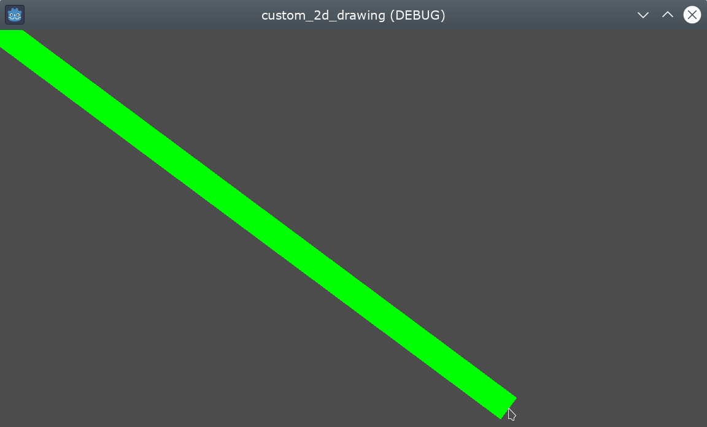
Vẽ cung tròn giữa 2 điểm
Ví dụ trên hoạt động tốt, nhưng có thể chúng ta muốn nối 2 điểm đó bằng một hình dạng hoặc hàm khác thay vì một đường thẳng.
Giờ hãy thử tạo một cung tròn (một phần của đường tròn) giữa hai điểm.
Export điểm bắt đầu của đường, số đoạn, độ rộng, màu và khử răng cưa sẽ cho phép chúng ta sửa các thuộc tính đó rất dễ dàng ngay trong bảng Inspector của trình chỉnh sửa:
extends Node2D
@export var point1 : Vector2 = Vector2(0, 0)
@export_range(1, 1000) var segments : int = 100
@export var width : int = 10
@export var color : Color = Color.GREEN
@export var antialiasing : bool = false
var _point2 : Vector2
using Godot;
using System;
public partial class MyNode2DLine : Node2D
{
[Export]
public Vector2 Point1 { get; set; } = new Vector2(0f, 0f);
[Export]
public float Length { get; set; } = 350f;
[Export(PropertyHint.Range, "1,1000,")]
public int Segments { get; set; } = 100;
[Export]
public int Width { get; set; } = 10;
[Export]
public Color Color { get; set; } = Colors.Green;
[Export]
public bool AntiAliasing { get; set; } = false;
private Vector2 _point2;
}
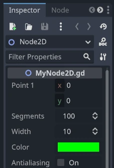
Để vẽ cung tròn, chúng ta có thể dùng phương thức draw_arc. Có rất nhiều cung tròn đi qua 2 điểm, nên trong ví dụ này chúng ta sẽ chọn nửa đường tròn có tâm nằm ở trung điểm của 2 điểm ban đầu.
Tính toán cung tròn này sẽ phức tạp hơn so với trường hợp đường thẳng:
func _draw():
# Average points to get center.
var center : Vector2 = Vector2((_point2.x + point1.x) / 2,
(_point2.y + point1.y) / 2)
# Calculate the rest of the arc parameters.
var radius : float = point1.distance_to(_point2) / 2
var start_angle : float = (_point2 - point1).angle()
var end_angle : float = (point1 - _point2).angle()
if end_angle < 0: # end_angle is likely negative, normalize it.
end_angle += TAU
# Finally, draw the arc.
draw_arc(center, radius, start_angle, end_angle, segments, color,
width, antialiasing)
public override void _Draw()
{
// Average points to get center.
Vector2 center = new Vector2((_point2.X + Point1.X) / 2.0f,
(_point2.Y + Point1.Y) / 2.0f);
// Calculate the rest of the arc parameters.
float radius = Point1.DistanceTo(_point2) / 2.0f;
float startAngle = (_point2 - Point1).Angle();
float endAngle = (Point1 - _point2).Angle();
if (endAngle < 0.0f) // endAngle is likely negative, normalize it.
{
endAngle += Mathf.Tau;
}
// Finally, draw the arc.
DrawArc(center, radius, startAngle, endAngle, Segments, Color,
Width, AntiAliasing);
}
Tâm của nửa đường tròn sẽ là trung điểm giữa hai điểm. Bán kính sẽ bằng một nửa khoảng cách giữa hai điểm. Góc bắt đầu và góc kết thúc sẽ là góc của vector từ point1 đến point2 và ngược lại. Lưu ý chúng ta phải chuẩn hóa end_angle về giá trị dương, vì nếu end_angle nhỏ hơn start_angle, cung tròn sẽ được vẽ ngược chiều kim đồng hồ, điều chúng ta không muốn trong trường hợp này (cung tròn sẽ bị lộn ngược).
Kết quả sẽ trông giống như thế này, với cung tròn hướng xuống và nằm giữa các điểm:
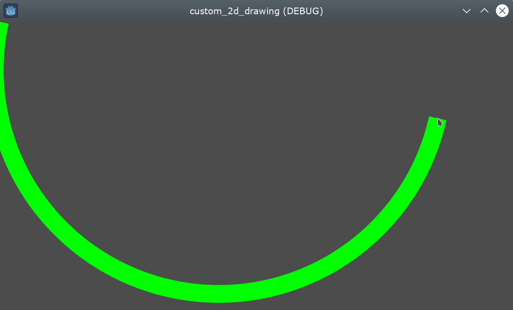
Hãy thoải mái thử nghiệm các tham số trong Inspector để có kết quả khác nhau: đổi màu, độ rộng, khử răng cưa và tăng số đoạn để đường cong mượt hơn, đổi lại tốn thêm hiệu năng.